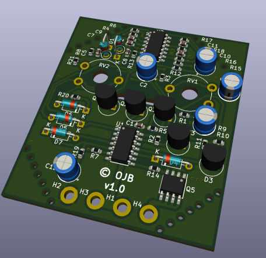
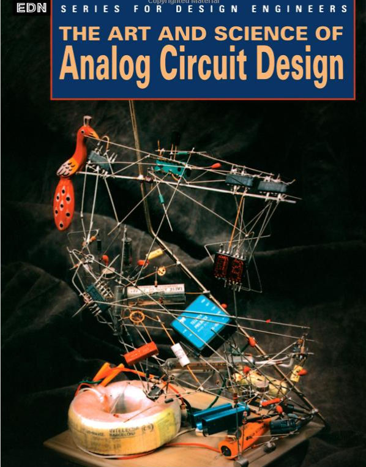

Needing an outdoor light by our front door, but - despite being an electronics engineer and weirdly averse to, and fearful of 240V mains electricity - I decided to create a custom battery powered Passive-Infrared (PIR) sensor and LED light. This avoided the need for drilling holes from inside to outside, and adding a stub from the indoor lighting mains ring.
I had a few old car and motorbike batteries spare. One could be re-purposed to power the outdoor light! But we have a north facing front door, ruling out solar powered recharging of a battery. Recharging every 6 months or so wouldn’t be too much of a pain, so I designed an analogue circuit to switch the light on when motion is detected by the PIR, whilst only drawing about 0.5mA in “standby” at night, and much less in the daytime.
The schematic can be found here.
I designed the board to fit into the housing from an old mains-powered PIR, using spare parts I had available at home, like an LM324 quad-Opamp, CD40106 hex Schmitt inverter, and some discrete BJTs and FETs. Of course, it would have been simpler to use a microcontroller, but being a bit old school with a liking for analogue electronics, I decided to do it this way.
I used the impressive free PCB design tool KiCad. Here’s an output from KiCad of the PCB:

It would be a shame if EVERYTHING new in this world is digital! An inspiring books that’s a bit of a ‘modern classic’ about the spirit of analogue electronics design can be found in the book “The art and science of analogue circuit design”, edited by a legend of analogue electronics, Jim Williams. The book is worth it for the cover design itself!
